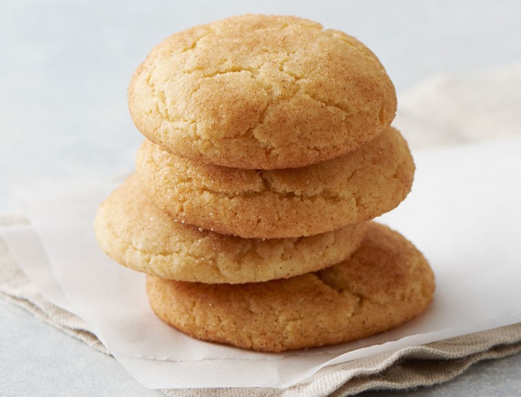

Snickerdoodles

This easy receipe will give you soft, perfect snickerdoodles in no time!
Ingredients
- 3 tablespoons sugar
- 3 teaspoons cinnamon
- 1 teaspoon vanilla extract
- 1/4 teaspoon salt
- 1 teaspoon baking soda
- 2 teaspoons cream of tartar
- 2 large eggs
- 1 cup butter, softened
- 1 1/2 cup sugar
- 2 3/4 cups flour
Steps
- Preheat oven to 350°F.
- Mix softened butter, 1 1/2 cups sugar, 1tps of vanilla extract and eggs thoroughly in a large bowl.
- Combine flour, cream of tartar, baking soda and salt in a separate bowl.
- Blend dry ingredients into butter mixture.
- Chill dough, and chill an ungreased cookie sheet for about 10-15 minutes in the fridge.
- Meanwhile, mix 3 tablespoons sugar, and 3 teaspoons cinnamon in a small bowl.
- Scoop 1 inch globs of dough into the sugar/ cinnamon mixture.
- Coat by gently rolling balls of dough in the sugar mixture.
- Place on chilled ungreased cookie sheet, and bake 10 minutes.
- Remove from pan immediately to cool.